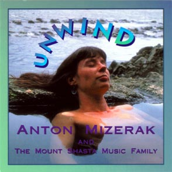

Unwind
by Anton Mizerak, Erik Berglund & Matisha
Anton Mizerak: keyboards, harmonica, Tibetan bowls and tabla.
Erik Berglund: harp and vocals.
Matisha: guitar and vocals on Ishq'Allah.
Peter Spring: bamboo flute on Water Spirit.
Marty Fried: vocals on Tara Mantra.
Background vocals: Kathy Zavada, Cindy Titzer, Ana Holub, Elizabeth Jenkins, Jirivil Wood and Jean Dickenson.
John Mazzei: keyboards on Awakening.
Sherril Kannasto, Kevin Setchko and Brooks Blanchard: flutes.
Karl Joseph: nylon stringed guitar on Water Spirit.
Marty Fried: vocals on Tara Mantra.
Background vocals: Kathy Zavada, Cindy Titzer, Ana Holub, Elizabeth Jenkins, Jirivil Wood and Jean Dickenson.
John Mazzei: keyboards on Awakening.
Sherril Kannasto, Kevin Setchko and Brooks Blanchard: flutes.
Karl Joseph: nylon stringed guitar on Water Spirit.

MP3 Downloads:
Water Spirit Anton Mizerak: keyboards & Tibetan bowls; Karl Joseph: nylon stringed guitar. Peter Spring: bambo flute.
Star Dreamer Anton Mizerak: keyboards & harmonica.
Tara Mantra Anton Mizerak: keyboards, vocals & Tibetan bowls; Sherril Kannasto: flute; Marty Fried: lead vocals.
Watch Tara Mantra live performance with Anton Mizerak and Laura Berryhill Colorado 2011
"Anton and friends are back with another gorgeous collection of soothing music specifically designed to help you relax into the full potential of your empowered self. ...Tara Mantra is one of my favorite tracks ever..." Steve Ryals - New Age Retailer
"This gift of relaxation from majestic Mount Shasta, California, presents eight songs from three of this vortex region's most popular performing artists. This area has served as a focal point for musicians who wish to infuse positive energy and ideals into sound for some time, so it is nice to see them collaborate on this album of New Age instrumentals." PJ Birosik - New Age Retailer
Available in both CD and cassette.